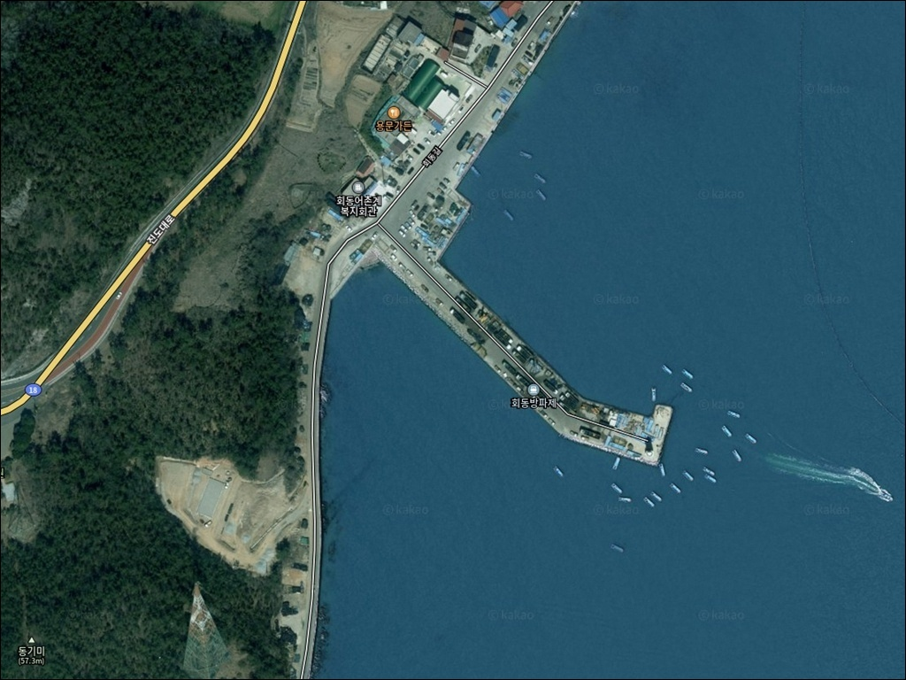
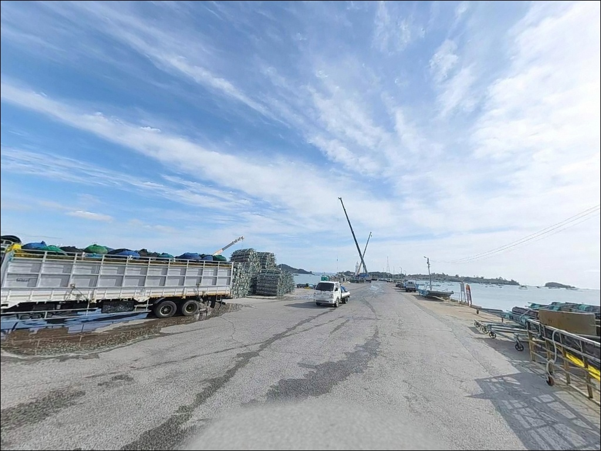
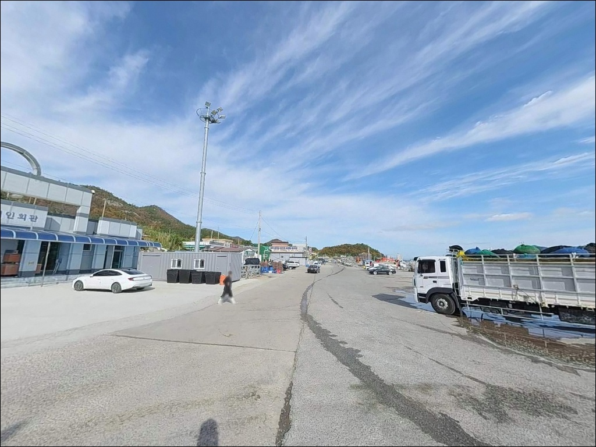
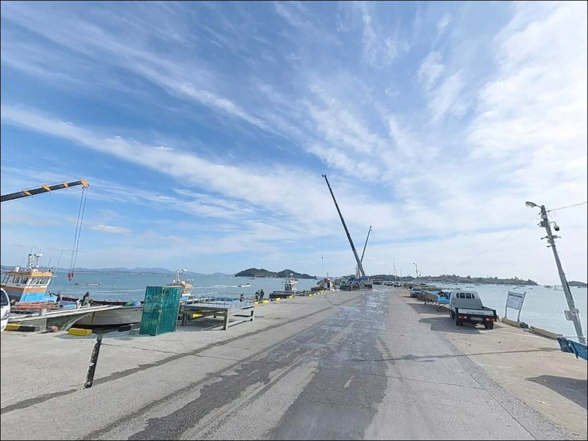
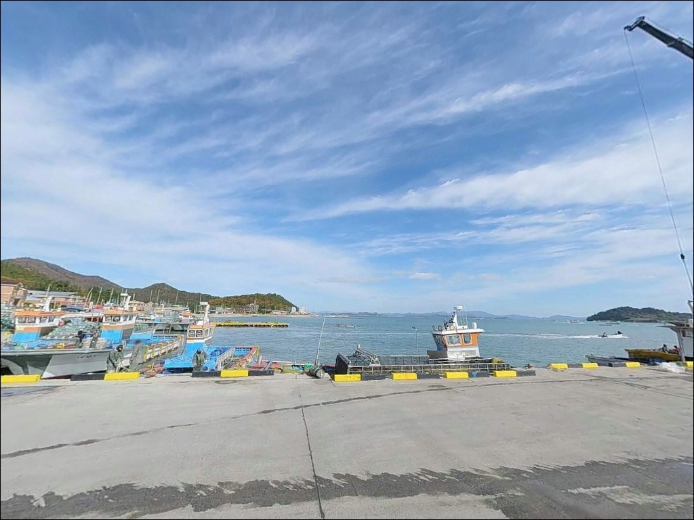
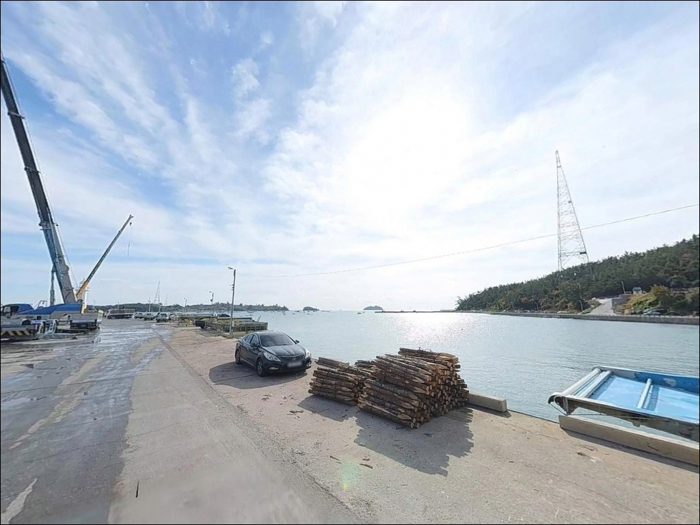
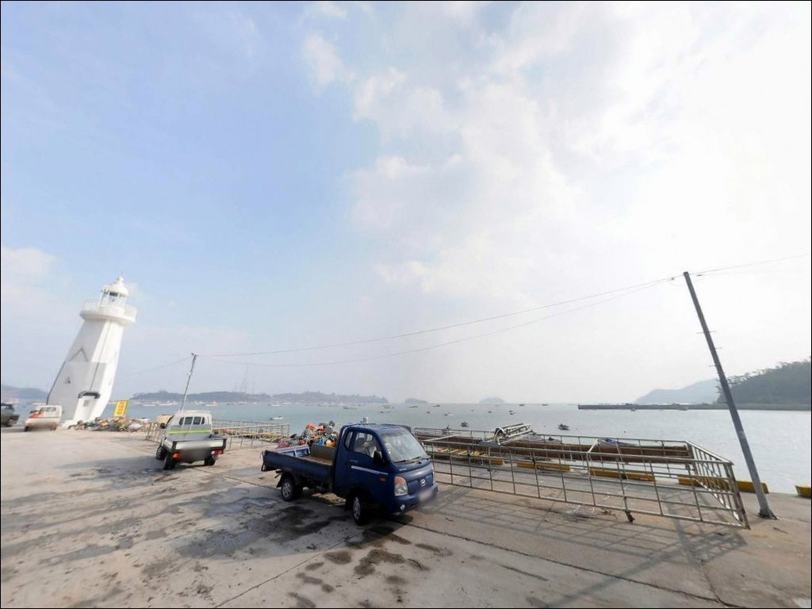
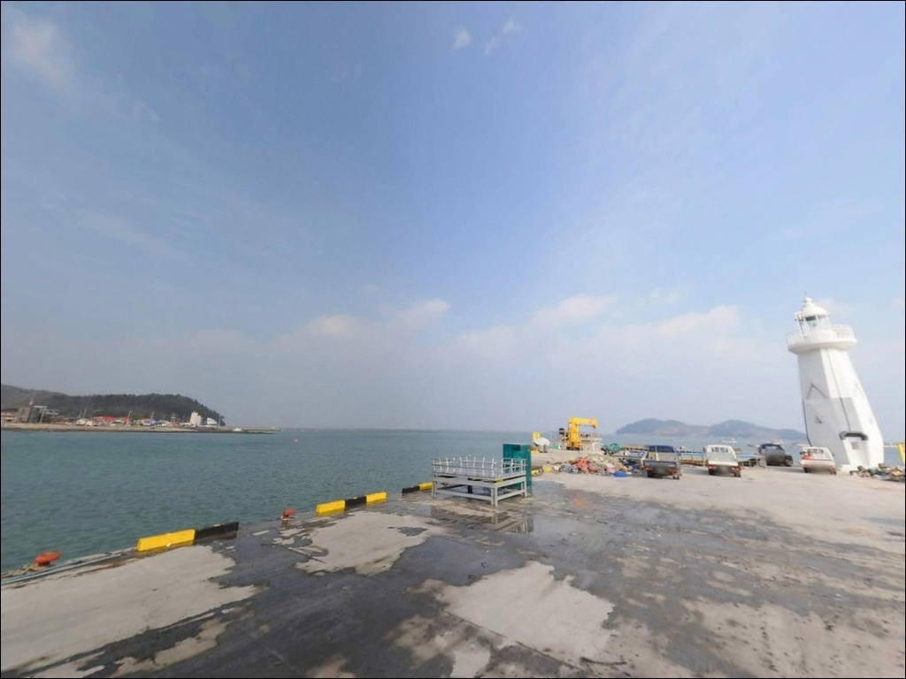
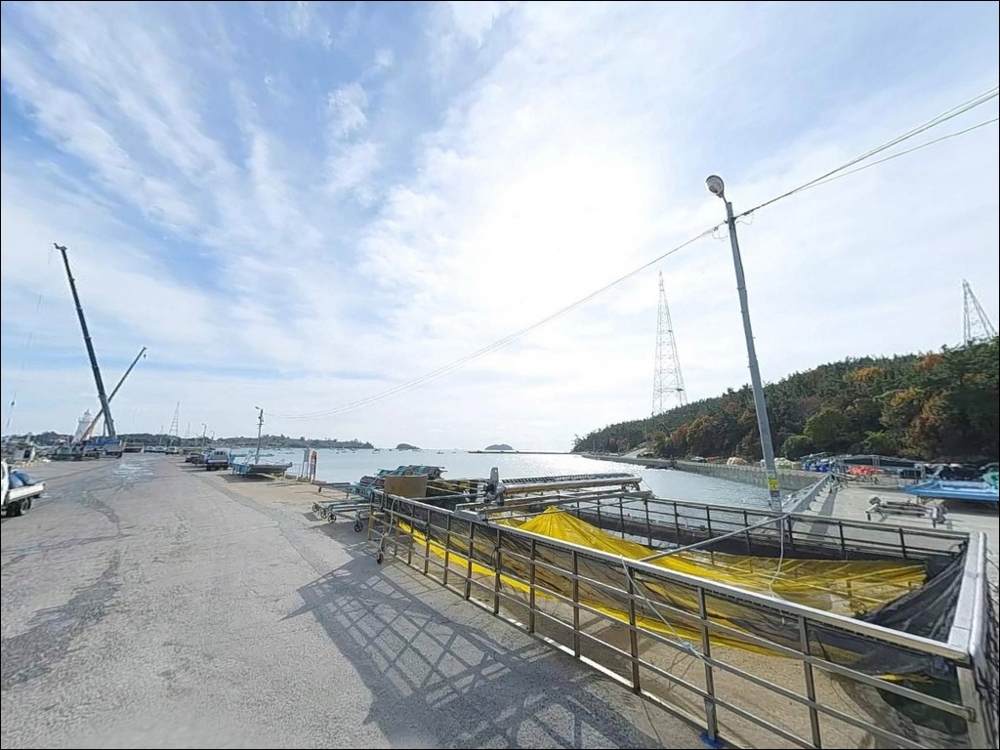

이 페이지에는 광고(제휴 링크 포함)가 있으며, 광고 링크를 통해 구매하면 운영자가 판매 수익 또는 수수료를 받을 수 있습니다. 포인트 사진: 카카오맵 스카이뷰·로드뷰. 이 페이지의 지도·사진 이미지는 카카오맵의 실제 서비스 이미지와 다를 수 있습니다.

회동방파제
전남 진도군 고군면 금계리 1212-2
수심이 낮다는 이유로 물때 확인을 건너뛰는 것이
회동방파제 방문에서 가장 흔한 판단 실수입니다.
모래·펄 저질의 얕은 내만형 포인트는
정조 구간에 조류가 완전히 멈추면
어떤 채비를 써도 입질을 이끌어내기 어려운 구조입니다.
이 글은 회동방파제의 진입 여건,
물때 판단 기준, 지형 기반 낚시 여건,
스타일 선택 조건에 집중합니다.
조황 단정이나 특정 어종 보장은
이 글의 범위에 포함되지 않습니다.
진도 신비의 바닷길 축제장 바로 옆에 자리한
회동방파제는 끝단에 진돗개 형상의 항로표지 등대가 설치된
소규모 어촌 방파제입니다.
관광지 인프라와 낚시 여건이 한데 엮인 독특한 구조의 포인트로,
접근성은 뛰어나지만
낚시 타이밍 판단이 조과를 결정하는 곳입니다.

회동방파제는 신비의 바닷길 관광지 진입로를 공유하는 구조라
방파제까지의 접근 자체는 어렵지 않습니다.
진도대교 이후 국도와 지방도를 따라
가계해수욕장·회동관광지 방향으로
포장도로가 이어져 있어
차량 진입 기준으로는 진도 권역에서 접근하기 쉬운 편입니다.
회차 공간과 주차는 관광지 인접 구조 덕분에
비교적 여유 있는 편입니다.
가계해수욕장 측에는 약 3만 평 규모의 대형 주차 공간이 있어
도보로 이동하면 방파제와 연계가 가능합니다.
방파제 초입 근처의 소형 공터도 활용할 수 있으나,
어선 이동 동선을 막지 않는 자리를 먼저 확인해야 합니다.
단, 음력 2~3월 신비의 바닷길 행사 기간과
여름 성수기 주말에는
관광객 차량이 몰려 주차 공간 경쟁이 심해지는 편입니다.
낚시 목적 방문이라면
평일 또는 비성수기 시점을 선택하는 것이
현장 진입 면에서 훨씬 유리합니다.

회동방파제는 관광지·어항·축제장이 한데 모인 구간에 위치해
완전한 노지 차박 포인트로 보기는 어렵습니다.
민가와 상가, 숙박시설이 인근에 혼재해 있어
야간 프라이버시는 낮은 편이며,
조용한 단독 차박을 원하는 낚시꾼에게는 맞지 않는 환경입니다.
낚시 후 하룻밤 머무는 용도라면
가계해수욕장 공영주차장을 베이스로 삼는 방식이
현실적인 선택입니다.
넓은 주차 공간과 화장실이 갖춰져 있어
방파제 인근보다 훨씬 안정적인 체류 조건을 제공합니다.
등대 조명과 해안도로 가로등이 있어
야간 시야는 기본 수준 이상 확보되는 편입니다.
회동관광지는 관광진흥법 지정 관광지 구역에 속합니다.
지정 시설 외 구역에서의 취사·야영은
지자체 방침을 먼저 확인하는 편이 좋습니다.
낚시와 차박을 연계할 계획이라면
출발 전 진도군청에 관련 규정을 확인하는 것이
현장 마찰을 피하는 가장 확실한 방법입니다.

회동방파제는 진도 권역에서 편의시설 접근성이 좋은 편에 속합니다.
반경 1km 이내에 가계해수욕장이 위치하며
샤워장과 화장실이 갖춰져 있습니다.
해안도로 주변으로는
편의점·향토 음식점·특산물 판매점이
어느 정도 분포해 있어
기본적인 먹거리와 생필품 조달은 가능한 편입니다.
반경 10km 안쪽 고군면 소재지 방향으로 이동하면
마트와 주유소를 이용할 수 있습니다.
응급 상황 발생 시 진도읍까지 거리가 있으므로
비상약품과 충분한 수분은 출발 전에 갖춰두는 편이 좋습니다.

회동방파제를 방문하기 전에 가장 먼저 확인할 것은 물때입니다.
바다타임에서 이 포인트의 적정 물때를
초들물에서 중날물로 제시하고 있어,
이 구간에 맞춰 출발 시각을 계획하는 것이
조과를 좌우하는 첫 번째 판단 기준입니다.
정조 구간에 도착하면 채비가 바닥에 붙기 때문에
물때 계산은 사전에 꼼꼼히 해두는 것이 기본입니다.
진도 해역은 조수간만의 차가 크고 기상 변화가 빠른 지역입니다.
출조 당일 아침에도 기상청 해양예보를 한 번 더 확인하는 것이
헛걸음을 막는 데 유효합니다.
모래·펄 저질 특성상 밑걸림은 상대적으로 적은 편이지만,
방파제 끝단 암초 구간에서는 채비 손실이 생길 수 있으니
여분 채비를 넉넉히 준비하는 편이 좋습니다.
어선이 출입하는 소규모 어항이라
어선 동선과 어구에 접촉하지 않는 자리 선정이
기본 매너입니다.
야간 낚시 시에는 구명조끼와 헤드랜턴을 반드시 챙겨야 하며,
관광지 구역 내에서는
소음과 조명 사용을 최소화하는 것이
주변 민원을 예방하는 방법입니다.

회동방파제의 핵심 지형 특성은 수심입니다.
바다타임 기준 수심 1.2~2.0m, 저질은 모래·펄로 구성된
전형적인 내만형 얕은 방파제 구조입니다.
얕다고 해서 낚시가 안 되는 구조는 아니며,
초들물에서 중날물 구간에 조류가 움직이기 시작하면
채비에 반응이 살아나는 편입니다.
이 타이밍이 이 포인트에서 낚시가 성립하는 핵심 조건입니다.
방파제 안쪽 내항 구간은 어선 계류와 양식장 출입이 이루어지는
비교적 잔잔한 수역입니다.
외항 방향으로 나올수록 모도 방면 개방 수역과 맞닿아
조류 흐름이 살아나는 구간이 형성되는 구조입니다.
방파제 끝단으로 갈수록 수심이 다소 깊어지는 경향이 있어
원투 채비는 끝단 쪽에서 더 유리한 편입니다.
진도 해역은 조수간만의 차가 크고
플랑크톤과 먹이가 풍부한 어장으로 알려진 지역입니다.
이 해역의 특성상 감성돔, 우럭, 노래미, 농어, 붕장어 등
다양한 어종을 기대해 볼 수 있는 구조이며,
계절별로는 봄·가을에 활성도가 높아지는 경향이 있습니다.
최신 조황은 출조 전에 꼭 검색해 보시기 바랍니다.

이 포인트에서 가장 기본적인 낚시 방식은 원투낚시입니다.
모래·펄 저질에 수심이 완만하게 이어지는 구조는
채비를 멀리 보낸 뒤 바닥층을 천천히 탐색하기 좋은 조건입니다.
붕장어, 노래미, 도다리류가 기대 대상어로 꼽히며,
야간에 외항 방향으로 원투 캐스팅하는 방식이
이 포인트 구조에 잘 어울립니다.
같은 금계리 해안선의 인근 방파제에서
민어 원투낚시 실적이 있다는 기록도 남아 있습니다.
릴찌낚시는 감성돔을 기대하는 낚시꾼에게 맞는 선택입니다.
진도 해역은 감성돔 주산지로 알려진 지역이라
봄과 가을, 방파제 콧부리 인근에서
릴찌 채비로 공략해볼 만한 지형 조건을 갖추고 있습니다.
수온이 오르는 5월부터 11월 사이가
릴찌낚시 활용도가 높아지는 시기입니다.
루어낚시도 조류 타이밍에 맞춰 시도해볼 수 있습니다.
농어, 우럭, 노래미는 이 해역에서 기대 가능한 대상어이며,
해 질 무렵 초들물 구간에 소프트웨어 계열 루어로
방파제 구조물 주변이나 물돌이 지점을 탐색하는 방식이
루어에 반응이 살아나는 조건을 만드는 편입니다.
조류가 멈춘 정조 구간에서는 루어 반응도 함께 떨어지는 구조이므로
입장 시각을 물때에 맞춰 계획하는 것이 기본입니다.

회동방파제가 성수기 인파로 여의치 않거나
조류 조건이 맞지 않을 때
가장 가까운 대안은 초평항 방파제입니다.
같은 해안선을 따라 1~2km 거리에 위치한 국가어항으로,
수심이 좀 더 깊고 다양한 방파제 구조가 갖춰져 있어
회동방파제와 조합해 돌아보기 좋은 포인트입니다.
적정 물때 역시 초들물~중날물로 유사해
같은 출조 일정에 묶어서 탐색하기에 적합합니다.
6~7km 거리의 금갑해변·금갑리 해안 일대는
차분한 낚시 환경을 원할 때 고려할 만한 대안입니다.
청정해역에 어족자원이 풍부한 지역으로 알려져 있으며,
방파제·선착장·갯바위를 함께 묶어 탐색할 수 있는 구조입니다.
넓은 주차 공간과 화장실을 갖추고 있어
회동방파제보다 조용한 차박 환경을 원하는 낚시꾼에게
대안 후보로 먼저 검토해볼 만합니다.
같은 금계리 해안선에서는 용호방파제도 살펴볼 수 있습니다.
회동방파제보다 방파제 규모가 큰 편이라
낚시 자리 선택의 폭이 넓고,
인근 해역 기준으로
원투낚시와 릴찌낚시를 함께 운영하기 좋은 구조입니다.

원투낚시와 릴찌낚시를 주력으로 삼는 낚시꾼이라면
회동방파제의 지형 조건은 크게 어렵지 않은 구조입니다.
얕은 수심과 모래·펄 저질이 채비 손실을 줄여주고,
관광지 인접 덕분에 편의시설 접근성도
진도 권역 방파제 가운데 양호한 편입니다.
반면 성수기 주말과 축제 기간에는
관광객 차량과 인파로 낚시 자리 확보가
평소와 다른 상황이 됩니다.
조용한 낚시 환경이 우선이라면
초평항이나 금갑해변 방향이 더 맞는 선택입니다.
물때 확인, 비성수기 시점 선택, 주차 사전 파악,
이 세 가지가 회동방파제를 제대로 즐기는 기본 조건입니다.
낚시를 마치고 가계해수욕장 주차장에서
하룻밤 차박으로 마무리하는 동선은
편의성과 낚시 연계를 모두 잡을 수 있는
진도 고군면 방문의 현실적인 조합입니다.